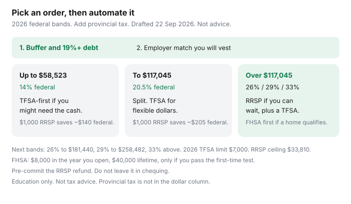

Personal Finance · Canada
RRSP vs TFSA First in Canada: An Income-Bracket Decision Tree for Savers
Households freeze between an RRSP and a TFSA and fund neither. The RRSP deduction looks clever. The TFSA looks flexible. The calendar year ends with the money still in chequing. You do not need a forecast of markets to pick an order. You need the rate on your expensive debt, whether a match is sitting unused, and which federal band the next dollar of taxable income actually falls in.
This is an illustrative tree, not a ruling and not tax advice. Federal brackets below are CRA’s 2026 figures (payroll formulas effective 1 January 2026, indexation factor 2.0%, and the current-year rates page), used 22 Sep 2026. Add your provincial tax. Your notice of assessment beats a chart.
Disclosure: Brokerage and bank accounts that hold RRSPs, TFSAs, and FHSAs are offer types. Saving Optimizer may later add partner links. We do not currently claim an issuer partnership. This is education, not tax, investment, or retirement advice. No debt-settlement pitch.
Key takeaways
- High-interest debt and a one-month cash buffer come before a new RRSP or TFSA debate. An employer match you will vest comes before both.
- 2026 federal tax on taxable income: 14% up to $58,523, 20.5% to $117,045, 26% to $181,440, 29% to $258,482, 33% above that. Provincial tax is extra. The lowest federal rate is 14% for 2026.
- TFSA-first fits lower bands and money you might need (a parental leave, a repair, a job gap). The 2026 TFSA dollar limit is $7,000 plus unused room. Withdrawals are not taxed. Room returns the next 1 January, not the same year.
- RRSP-first fits higher bands when you expect a lower rate in retirement and you can leave the money there. The 2026 RRSP dollar ceiling is $33,810. Your room is often less. Withdrawals are taxable.
- An eligible FHSA can sit ahead of a plain RRSP for the home slice: a deduction in, and a qualifying withdrawal that is not taxed. Confirm the first-time test before you open one.
Job one: high-interest debt and emergency buffer
A 20.99% card, the benchmark used on our debt pages, is a contracted cost. An RRSP deduction is not a reason to keep paying it. Build about one month of must-pays in an unregistered HISA if you have no buffer, then send extra dollars to revolving balances around 19% and up. The sequence is debt or TFSA and the household payoff plan. A refund that shows up mid-argument follows refund triage, not a new philosophy.
If the employer will match a contribution and you will vest, turn that payroll election on even while a card exists, as long as the deduction does not cause a missed bill. A dollar-for-dollar match on a slice of pay is not a market guess. The booklet is capture the match. Group RRSP amounts generally use your RRSP room. A DPSP is a different vehicle and can have a vesting period. Read which one you have.
When TFSA-first wins (lower brackets, flexible goals)
Use the TFSA as the default home for new savings when most of these are true:
- Your taxable income is in the 14% federal band (up to $58,523 in 2026), or only a small slice crosses into 20.5%. The federal tax saved by an RRSP deduction on that slice is real and modest. Provincial tax adds to it. It is still a deferral: the withdrawal is taxed later.
- You might need the money before retirement. Parental leave, a kid’s year of activities you cannot predict, a job change, a parent you support. TFSA withdrawals are not taxable income. They do not, by themselves, change income-tested benefits the way an RRSP withdrawal can. Room for the withdrawal returns the following 1 January. Same-year replacement rules are TFSA withdrawals.
- You expect your tax rate in retirement to be similar to today’s, or higher. An RRSP that defers tax from a low band into a similar band mostly bought a lock-in.
The 2026 dollar limit is $7,000, plus unused room from earlier years, minus this year’s contributions. Two adults means two limits. There is no joint TFSA. Size any PAD from a ledger, because My Account lags: reading the room figure.
When RRSP-first wins (higher brackets, employer match)
The RRSP deduction comes off taxable income. On a labelled $1,000 contribution, federal tax alone falls by about:
| 2026 taxable income in the band | Federal rate | Federal tax saved on $1,000 |
|---|---|---|
| Up to $58,523 | 14% | $140 |
| $58,523 to $117,045 | 20.5% | $205 |
| $117,045 to $181,440 | 26% | $260 |
| $181,440 to $258,482 | 29% | $290 |
| Over $258,482 | 33% | $330 |
RRSP-first is the stronger sketch when the deduction hits 26% federal or higher (taxable income over $117,045 in 2026) and you expect withdrawals to be taxed in a lower band and you can leave the money until retirement. A cash withdrawal is taxable. The issuer withholds tax at source; that withholding is a prepayment, not the final rate on your return. Home Buyers’ Plan and Lifelong Learning Plan withdrawals are different rules. The Housing HBP guide is the down-payment version. Do not treat the RRSP as a chequing account with a tax slip.
Your deduction limit is on the notice of assessment: generally 18% of prior-year earned income, capped by the 2026 dollar limit of $33,810, minus a pension adjustment, plus unused room. Contributing more than that limit has its own penalty. The first-60-days timing (2 March 2026 was the deadline for 2025 contributions; the 2026 tax year has its own window into early 2027) is RRSP timing. A spousal RRSP uses the contributor’s room. It does not create a second ceiling.
High retirement income can face the Old Age Security recovery tax. TFSA withdrawals are not income, which is one reason a higher-bracket household still keeps a TFSA beside an RRSP. Confirm the year’s OAS threshold on canada.ca. This page does not calculate it.

FHSA interactions for first-home aspirants
If you are allowed to open an FHSA and a first home is the plan, the home slice can come before a plain RRSP. Contributions can be deducted. A qualifying withdrawal is not taxed. Participation room is $8,000 in the year you open, with at most $8,000 of carry-forward, so a later year is often capped at $16,000. Lifetime contributions are $40,000. Unused years before you open do not pile up. The 15-year clock starts when you open. Details and the RC721 transfer to an RRSP if plans change are in FHSA automation. Qualifying-buyer tests are on the Housing FHSA how-to. Opening one because the refund arrived, when you already own a home, is the wrong door.
An FHSA does not replace the emergency HISA or the employer match. It replaces the “which registered account gets the home dollars” argument.
Refund looping: convert RRSP refund into lasting savings
An RRSP contribution can produce a refund. If that refund sits in chequing, you deducted income and then spent the tax savings. Pre-commit it the night you file:
- High-rate debt still revolving → the refund pays that, after the one-month buffer exists.
- Otherwise, TFSA if the tree says flexibility, or the next RRSP contribution if the tree says you are still in a high band and you have room.
- Do not increase lifestyle PADs because a refund is “annual.” It is not a raise. The monthly system is zero-based budgeting.
Direct deposit to a named HISA so the refund cannot leak in transit. CRA’s electronic timeline is about two weeks when direct deposit is set up. Confirm the current line on canada.ca.
A simple income-bracket decision tree (illustrative, not advice)
Walk down. Stop at the first line that is unfinished.
- Minimums current, and one month of must-pays in a HISA. If not, do that before a new registered deposit.
- Employer match on, if you will vest and the payroll deduction clears.
- FHSA, if you pass the first-time test and the home is the goal, up to this year’s participation room.
- Taxable income up to $58,523 federal (14%): TFSA for ongoing savings. Use RRSP for the match you already turned on, not as the main pile, unless you have a concrete reason the deduction will be worth more later.
- Between $58,523 and $117,045 (20.5% federal): split. TFSA for money you might need in the next few years. RRSP for dollars you can lock until retirement if you expect a lower band later. Revisit when a raise crosses $117,045.
- Over $117,045 (26% federal and up): RRSP for the dollars you will not need early, inside your deduction limit. Keep a TFSA for flexibility and for withdrawals that should not count as income later.
- Whatever you picked, automate a PAD the business day after payroll. An order you do not automate becomes next year’s same argument. Payday mechanics are pay yourself first.
A raise, a parental leave, or a move to another province changes the band. Redo the tree then. Do not redo it every payday. The cost of switching accounts twice a year is a paused PAD and unused room, which is the freeze this page is trying to end.
Sources & date stamps
- CRA, Current-year tax rates (2026) and T4127 payroll thresholds effective 1 January 2026 — federal bands and rates listed above; indexation factor 2.0%; lowest rate 14% for 2026 (used 22 Sep 2026). Provincial and territorial rates are separate pages.
- CRA, RRSPs — 2026 dollar limit $33,810; deduction limit on the notice of assessment; withdrawals are taxable.
- CRA, TFSA — 2026 dollar limit $7,000; withdrawals add room on 1 January of the next year.
- CRA, FHSA — $8,000 annual participation room, $40,000 lifetime, qualifying withdrawal rules. Housing guide covers the home test.
- The $1,000 federal-tax column is arithmetic on the statutory federal rate. It is not your combined marginal rate and not advice to contribute.
Frequently asked questions
Should I use an RRSP or a TFSA first?
Clear high-interest debt and keep about one month of bills in cash first. Take an employer match you will vest. Then use a TFSA if you are in the 2026 14% federal band (taxable income up to $58,523) or you may need the money. Lean RRSP if you are over $117,045 of taxable income, you expect a lower rate in retirement, and you can leave the funds there. Add provincial tax. This is a sketch, not advice.
What are the 2026 federal tax brackets?
CRA’s 2026 rates are 14% up to $58,523, 20.5% to $117,045, 26% to $181,440, 29% to $258,482, and 33% above that. The indexation factor for 1 January 2026 is 2.0%. Provinces and territories charge tax on top.
Where does an FHSA fit?
If you are eligible and a first home is the plan, FHSA dollars for that goal can come before a plain RRSP. You may deduct the contribution, and a qualifying withdrawal is not taxed. Room starts at $8,000 in the year you open. It does not include years before the account existed.
What should I do with the RRSP tax refund?
Pre-commit it. Pay revolving high-rate debt if any remains. Otherwise send it to the TFSA or the next RRSP contribution, matching the same tree. A refund left in chequing is spending the deduction.
Do my spouse and I share contribution room?
No. Each person has their own TFSA room and their own RRSP deduction limit. A spousal RRSP uses the contributor’s RRSP room. A household does not get to pool those ceilings into one account.